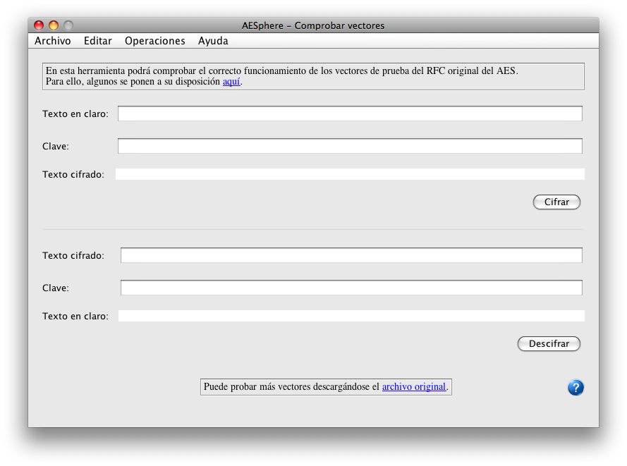
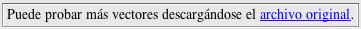

Mediante esta ventana podremos comprobar el correcto funcionamiento del algoritmo AES implementado en AESphere
Para ello se pueden utilizar los vectores de prueba del RFC original del AES. Con la instalación del programa se aportan una serie de vectores para probar el algoritmo:
pero se pueden descargar todo el pack completo si se quiere realizar una comprobación exhaustiva del proceso.
